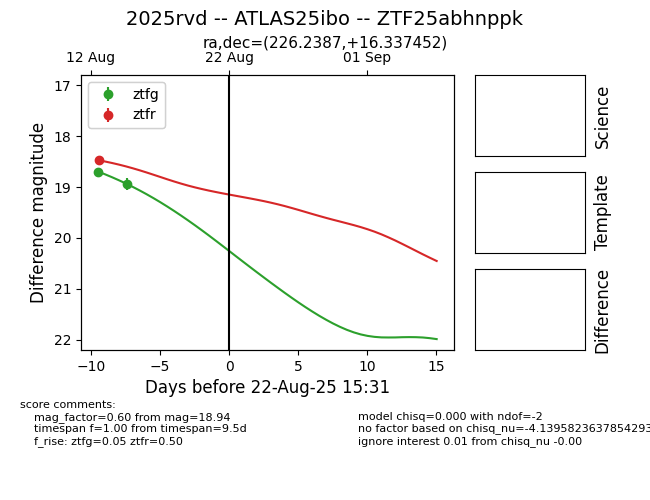

Target 2025rvd at 2025-08-22 16:06, see:
FINK: fink-portal.org/ZTF25abhnppk
Lasair: lasair-ztf.lsst.ac.uk/objects/ZTF25abhnppk
ALeRCE: alerce.online/object/ZTF25abhnppk
TNS: wis-tns.org/object/2025rvd
YSE: ziggy.ucolick.org/yse/transient_detail/2025rvd
alt names
ZTF25abhnppk (ztf,alerce)
2025rvd (tns,yse)
ATLAS25ibo (atlas)
coordinates:
equatorial (ra, dec) = (226.2387,+16.33745)
galactic (l, b) = (20.6392,+57.29239)
photometry
last atlaso=18.87, ztfg=18.94, ztfr=18.47
15 atlaso, 2 ztfg, 1 ztfr detections
